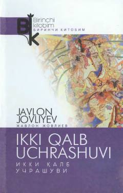

IQIkki qalbning uchrashuvida insoniy his-tuyg'ular va hayot haqiqati namoyon bo'ladi.
Bu kitob Javlon Jovliyevning hikoyalar to'plamidir. Hikoyalarda Vatan sog'inchi, 'paxta ishi' kabi ulkan dardlarning ruhiy-psixologik talqinlari va dunyoqarashlari bir-biriga qarama-qarshi bo'lgan insonlarning ichki olami tasvirlanadi. Kitob O'zbekiston Yozuvchilar uyushmasi o'tkazgan yosh ijodkorlar seminarida nashrga tavsiya qilinib, 'Navro'z' nashriyotida 2019-yilda chop etilgan.